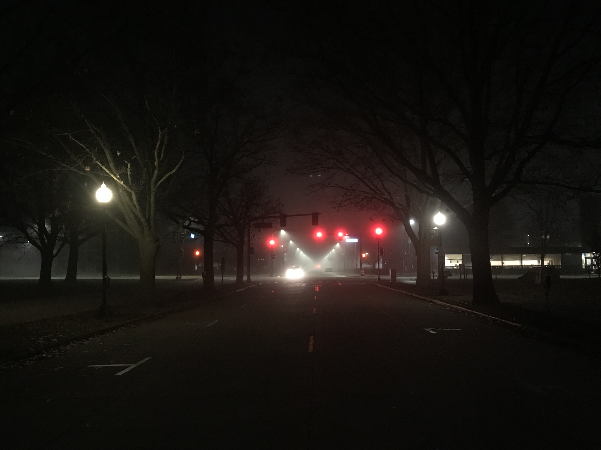
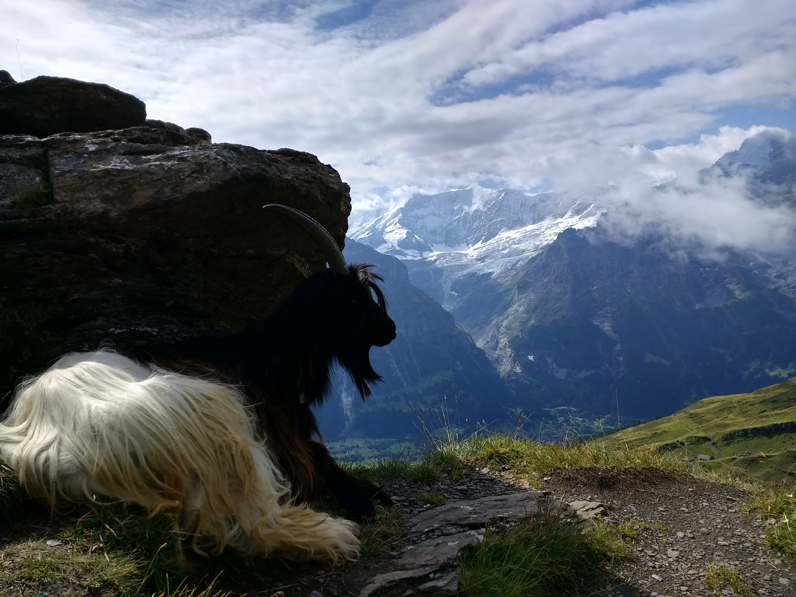
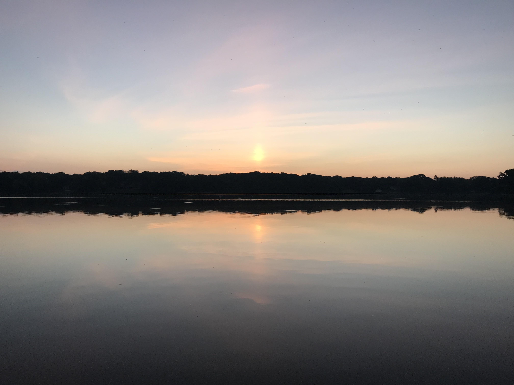

sausalito, ca
07.14.18
we took an uber out to this black sands beach not knowing there would be no cell reception to call an uber back. out of desperation we began to slowly walk back, knowing that it would be impossible to walk back by dark. along the way, after many attempts to hitchhike with the few cars that would pass by, one father with his son and dog stopped for us, and drove us all the way across the golden gate bridge. my first time hitchhiking...

law library, uiuc
12.14.19

swiss alps, switzerland
08.16.17

snyder hall, uiuc
9.26.18
savoy, il
9.14.18

chatham, il
9.30.18